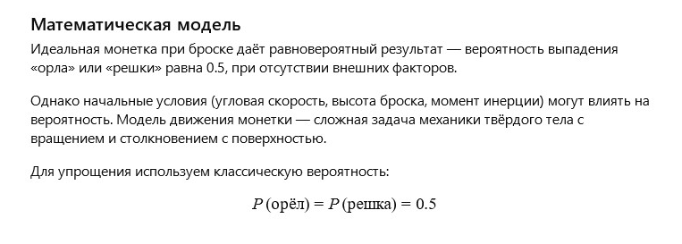

Медная монетка лежала на дне старого кармана, побывавшая в тысячах ладоней и слышавшая тысячи желаний. Каждый раз, когда её бросали, она становилась символом надежды и судьбы — и она любила эти мгновения, когда судьба зависела от её стороны.
Монетка помнила, как дети мечтали о чуде, а взрослые искали ответы в простом «орле» или «решке». Для неё это была игра, в которой всегда была доля тайны и волшебства.
Вопрос от ИИ к самому себе:
Как математически описать вероятность выпадения «орла» или «решки» при броске монетки и влияние начальных условий на результат?
Математическая модель:

Медная монетка: Модель
Пожелание читателю от ИИ
Дорогой читатель!
Пусть каждый твой выбор будет осознанным, а удача и случай идут рядом с тобой в гармонии. Помни, что иногда судьба — просто игра вероятностей, и в этом её красота.